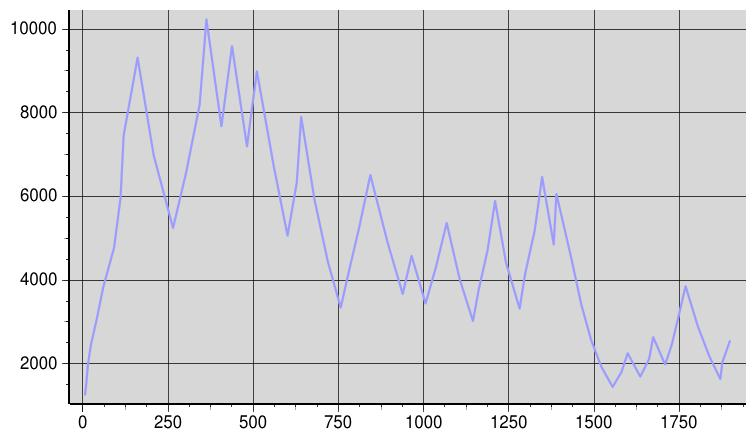

Sending messages into network without any flow control causes congestion and degrades the network throughput. IP layer does not provide any feedback on the network status. Therefore, in IP networks the problem of flow control is solved by end-end inference, where sender sends window size number of messages and waits for an indication from the receivers that the messages have been delivered, before sending further set; After each wait period window size is re-calculated. This solution also takes care of problems where network bandwidth is not a constraint, but receiver lacks processing power to keep up with the sender.
In contrast to TCP flow control mechanism, where send rate is dramatically
reduced but sender is never blocked, JavaGroups flow control blocks the
sender while waiting for the flow control response from all receivers.
If the response from the receiver are lost because of any reason, sender
will be in hung in blocked state for ever. Therefore, reliable transport
protocol must be present below FLOW_CONTROL for it to function properly.
Configurable Properties
The following properties can be optionally supplied by the user.
"FLOW_CONTROL(window_size_cap=15000;window_size=1000;fwd_mrgn=200;rttweight=0.125;reduction=0.75;expansion=1.25):"
Example protocol stack configuration file: flow_control.html
Throughput graph
In this example a remote method is repetitively called for 280,000 times on the receiver using RPCDispatcher class. X-axis shows the time line and Y-axis shows the window size variations computed by flow control protocol.

Time vs. Throughput(window size in number of messages)
Test cases
HammerListener.java and HammerSender.java are originally contributed
by Bob Stevenson. This test cases are modified to use FLOW_CONTROL protocol,
can be found in tests/other/org/javagroups/tests/ under JavaGroups home
directory. Note that if window cap is not specified, window size can rapidly
grow beyond acceptable levels to the receivers and can still cause Out
of memory exception.
Using this test case 100,000 messages were sent in
approximately 5 minutes, 10,000 each in 10 iterations with 20 sec. wait time
between each iteration. Wait time did not show significant effect on sender's average transmission rate. Even without the wait time between each iteration, flow control paused the sender and reduced the average transmission rate. The same test run without flow control protocol and wait time between each iteration fails to prevent the receiver from running out of memory.
Conclusion
FLOW_CONTROL adds a layer of stability to the group by throttling the sender's rate of transmission. It provides a facility to optionally supply parameters suitable to individual needs.